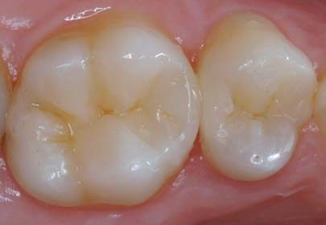
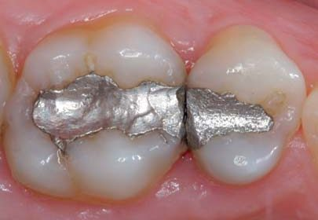
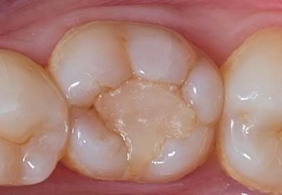
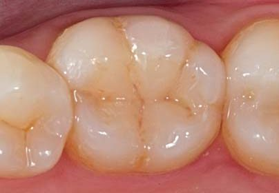
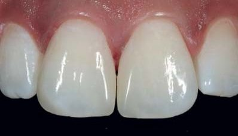
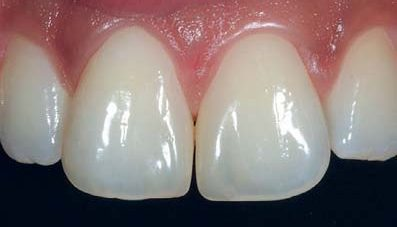
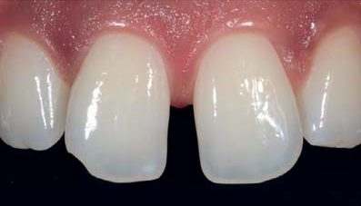

Матеріали Дентсплай Сірона · журнал «ДентАрт» 2022 №3
Універсальний відтінок композиту A2 з додатковими опціями для естетично складніших випадків
The versatile A2 composite shade with additional options for more esthetically challenging cases
Максимально точно підібрати відтінок, який відповідає кольору натурального зуба, є справжнім викликом – через час, що його лікар витрачає на визначення відтінку, та через обмеження, властиві людському оку щодо точності підбору кольору.
Усі стоматологи знають, що природні зуби не завжди однорідні за кольором і часто можуть не відповідати діапазону кольорів шкали VITA. Стоматологи можуть витрачати до 14 % часу, обираючи відповідний відтінок композиту під час виконання реставрації Класу II, але в найкращому випадку людське око є точним у підборі відтінку композиту лише у 27 % випадків. Крім того, дослідження засвідчують, що близько 80 % пацієнтів усвідомлюють різницю в кольорі між реставрованими та сусідніми природними зубами. Усі ці фактори можуть зробити процес підбору відтінку трудомістким для лікаря-стоматолога, який бажає бути більш ефективним і точним під час підбору відтінку для композитної реставрації.
Зрештою, кінцева мета полягає в тому, щоб кожен пацієнт був задоволений результатом незалежно від того, це відносно простий чи досить складний випадок.
Процедура реставрації стала ефективнішою в часі із впровадженням систем композитних матеріалів, які пропонують спрощений або зменшений спектр відтінків. Сучасні системи мають тенденцію до зменшення кількості відтінків, які можуть охопити всю кольорову гаму шкали VITA. Ця тенденція також відображає реальність того, що більшість стоматологів зазвичай використовують лише кілька відтінків у своїй практиці, з них більшість – це відтінки групи А.
Раніше традиційні композитні матеріали розроблялися з досить складними системами, які надавали стоматологам кілька варіантів емалі з різною прозорістю та дентину з різною опаковістю. Незважаючи на те, що ці системи забезпечують чудову естетику, підбір відтінку може потребувати більше часу, і практикам потрібно мати більше матеріалів в арсеналі. Оскільки на ринку з'явилися композитні системи зі зменшеним спектром відтінків і при цьому з покращеними оптичними властивостями, підбір відтінків композиту став набагато легшим та швидшим. Це стало можливим завдяки вдосконаленим характеристикам композиту, а саме ефекту хамелеона.
Ефект хамелеона – це здатність композитної реставрації з'єднуватися з прилеглими структурами зуба, створюючи безшовний і природний вигляд, незважаючи на те, що відтінки реставрації та зуба співпадають неідеально. Ефект хамелеона, як правило, працює краще у випадках, коли поверхні зуба багато, наприклад, бічні зуби, тобто коли не так помітно, не в лінії усмішки або не на зубах, на які впливає темний фон ротової порожнини.
Менша кількість відтінків, повна відповідність шкалі VITA
Останнім часом одновідтінкові системи полімерних композитних матеріалів набули популярності. Вони передбачають, що один відтінок підходить для всього, і це дозволяє усунути труднощі процедури підбору відтінків. Хоча це здається привабливим, але у цьому підході є певні обмеження, які потрібно враховувати. У нещодавньому дослідженні, опублікованому в Journal of Esthetic and Restorative Dentistry у 2021 році, було зроблено висновок, що точність підбору відтінку одновідтінкового композиту нижча у порівнянні з багатовідтінковими композитними матеріалами, що обмежує їх використання в естетично значущій зоні. У дослідженні проаналізовано три композитні матеріали.
| Виробник | Опис матеріалу | Випробувані відтінки |
|---|---|---|
| Omnichroma (Tokuyama Dental) | Універсальний композитний матеріал одного відтінку, що перекриває відтінки шкали VITA від А1 до D4 | Omnichroma |
| Neo Spectra ST (Dentsply Sirona) | Універсальний композит, доступний у п'яти відтінках розколірки CLOUD SHADE, що відповідає певній групі відтінків шкали VITA і дозволяє системі досягти відповідності всього спектру | CLOUD SHADE А1 на зубах В1; А2 на А2 і В2; А3 на С2 і D3 |
| Tetric EvoCeram (Ivoclar) | Мультивідтінкова композитна система з наявними відтінками емалі, дентину та відтінком «бліч» | Емалеві відтінки А2, В1, В2, С2 та D3 |
Обмеження одновідтінкових композитних систем у реставраціях передніх зубів
У цьому дослідженні було порівняно і виявлено, що емалеві відтінки більш прозорі і краще підходять для реставрації бічних зубів, але при реставраціях у фронтальній ділянці, наприклад, закритті діастеми або дефекту Класу IV, велика прозорість композиту може спричинити сіруватість реставрації у порівнянні із сусідніми природними зубами, і це є естетичною проблемою.
Ці композити наносилися в один шар як реставрація оклюзійної поверхні на двошарових акрилових зубах для відтворення природних зубів.
Мультивідтінкові композитні системи ліпше співпадали в кольорі із зубами, ніж одновідтінковий універсальний композит, але Neo SpectraТМ ST мав найвищі естетичні результати серед популярних композитних відтінків А2, B1 та B2.




В іншому дослідженні,7 опублікованому того ж року і в тому ж журналі, різні автори досліджували дефекти Класу ІІІ, заповнені тими ж трьома композитними матеріалами, що й у попередньому дослідженні, з додаванням Filtek Universal (3M Oral Care St. Paul MN). Це була перша стаття, у якій порівнювали одновідтінковий композит з трьома мультивідтінковими композитними системами у реставраціях фронтальної ділянки.
Складність виконання реставрацій у фронтальній ділянці у порівнянні з бічними ділянками полягає у пошуку належних матеріалів і відтінків для створення оптимальної прозорості, що відповідає як дентину, так і емалі, особливо на темнішому тлі ротової порожнини. Без застосування опакового відтінку дентину надмірний рівень прозорості може призвести до появи сіруватого відтінку реставрації.
До появи «універсальних композитів» правильний підбір і комбінація опакового та дентинного відтінків композиту були надзвичайно важливими при виконанні реставрацій у фронтальній ділянці. Якщо опаковість реставрації занадто висока, то буде відображено лише колір реставрації, що зведе нанівець плавний перехід від кольору реставрації до кольору зуба, зробивши край переходу видимим.
При занадто високій прозорості порожнина зуба просвічуватиметься крізь реставраційний матеріал, а сама реставрація буде сіруватою на вигляд у порівнянні з прилеглими структурами зуба. Такі проблеми можуть виникати, навіть якщо відтінок композитного матеріалу був підібраний правильно.
Ці складні клінічні ситуації змотивували виробників до розробки композитних матеріалів з універсальною прозорістю та опаковістю, які б могли відповідати кольору зубів при виконанні реставрацій у фронтальній та бічних ділянках, а також зменшити кількість матеріалів, які потрібно закуповувати клініці, та покращити ефективність процедур.
Результати другого дослідження засвідчили, що універсальні мультивідтінкові композитні системи, включаючи Neo SpectraТМ ST, дали кращу відповідність кольору при виконанні реставрацій Класу ІІІ у фронтальній ділянці, ніж одновідтінкова універсальна система Omnichroma,1 яка продемонструвала найнижчі значення відповідності кольорів. Neo Spectra ST показала найвищу відповідність відтінків як при візуальній оцінці, так і при оцінці на фото, для найпоширеніших відтінків шкали VITA®1 А2 і А3. Автори запропонували виробникові розробити другий відтінок або «opaque blocker» для використання з Omnichroma,1 який би дозволив композитові краще відповідати структурі сусіднього зуба у фронтальній ділянці. Це, звісно, не зробить цей композитний матеріал системою одного відтінку для передніх зубів і вимагатиме більше матеріалів в арсеналі та клінічного часу для завершення процедури.



Висновки
Два останні дослідження продемонстрували, що Neo Spectra ST перевершила одновідтінковий композит Omnichroma у найпопулярніших відтінках шкали VITA – А1, А2, В1, В2. Універсальність концепції відтінків розколірки Neo Spectra ST відповідає всім необхідним вимогам щодо подолання викликів, пов'язаних з топографічними особливостями зубів як фронтальної, так і бічних ділянок:
- добра адаптація;
- знижена липкість – мікроструктура наповнювача Sphere TEC і його суміш із субмікронним скляним наповнювачем зменшує площу вільної поверхні полімера, знижуючи липкість до інструментів;
- моделюючі властивості;
- чудова відповідність відтінку та естетика;
- легко полірується.
Кінцевим результатом є міцна довговічна реставрація, що має високу міцність на згинання і стійкість до зношування. З Neo Spectra ST клініцист може комфортно і впевнено починати працювати з відтінком А2, а потім за потреби розширити кольорову гаму зі спрощеної системи відтінків. У вас є можливість працювати одним відтінком або відразу всією системою відтінків за бажанням.
Найпростіший підхід досить привабливий, однак існують обмеження, які впливають на здатність стоматолога бути готовим до будь-якої клінічної ситуації. Незалежно від тенденцій, усі стоматологи прагнуть витрачати менше часу на підбір відтінку, а більше – на інші маніпуляції.
Про універсальний композитний реставраційний матеріал Neo Spectra ST
Відтінок А2 Neo Spectra ST може стати відправною точкою у легкому підборі відтінків; також є можливість обрати тип в'язкості композиту. Neo Spectra ST низької в'язкості (low viscosity) має м'яку, кремоподібну консистенцію, а високої в'язкості (high viscosity) – щільнішу, пастоподібну; незалежно від типу в'язкості, композит має однакові властивості та характеристики. За необхідності працювати з усією розколіркою VITA потрібно мати ще кілька додаткових відтінків Neo Spectra ST – A1, A3, A3.5 та A4 розколірки CLOUD SHADE. Для більш вибагливих естетичних ситуацій, таких як реставрації фронтальних зубів високої прозорості, спектр композитів Neo Spectra ST має два додаткові відтінки дентину.
Література
- Not a registered trademark of Dentsply Sirona Inc.
- Dentsply Sirona Restorative, GNY 2016 Attendee Survey (n = 42). Based on a 37-minute procedure.
- Visual and Spectrophotometric Shade Analysis of Human Teeth. J Dent Res. 2002 Aug;81:578–582.
- Joiner A. Tooth Color: A Review of the Literature. J Dent. 2004;32:3–12.
- Dentsply Sirona historical sales data for composites.
- Iyer R. S., Babani V. R., Yaman P., Dennison J. Color match using instrumental and visual methods for single, group, and multi-shade composite resins. J Esthet Restor Dent. 2021 Mar;33(2):394–400.
- de Abreu J. L. B., Sampaio C. S., Benalcázar Jalkh E. B., Hirata R. Analysis of the color matching of universal resin composites in anterior restorations. J Esthet Restor Dent. 2021;33:269–276.
- For more information, contact Dentsply Sirona.